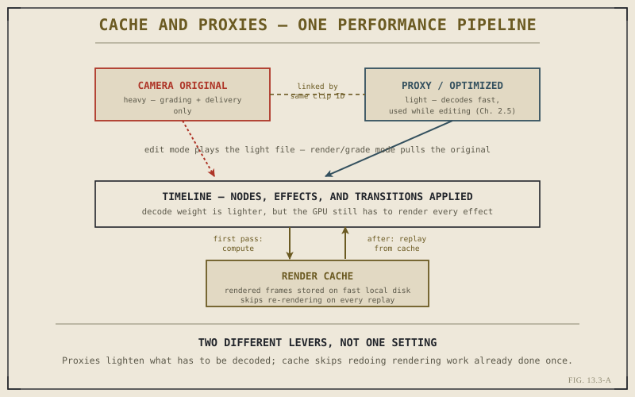

Chapter 2.5 introduced proxies and optimized media as a way to trade decode weight for editing speed, and left them there — a useful, self-contained workflow habit. Chapter 13.2 has since given that habit a sharper frame: storage throughput and GPU load are the two pipeline stages most likely to actually bottleneck a project. Revisited through that lens, proxies, optimized media, and a tool Chapter 2.5 never covered — render cache — turn out to be two distinct levers, each aimed at a different one of those two stages, not one setting wearing different names.
Two Different Levers, Not One Setting
It's worth stating the distinction plainly before going further, because these tools are easy to lump together as "things that make editing faster" without noticing they work on different problems. Proxies and optimized media reduce how much data has to be read from storage and decoded in the first place — relief aimed squarely at the storage-read and decode stages Chapter 13.2 identified. Render cache works on an entirely different stage: it reduces how much the GPU has to recompute, by storing already-rendered results instead of regenerating them on every single playback pass. Lightening the load and skipping redundant work are related goals, achieved through genuinely different mechanisms.
Proxies and Optimized Media as Storage and Decode Relief
Chapter 2.5's distinction still holds exactly as described: a proxy is a separate, externally manageable stand-in file linked to the original, while optimized media is an intermediate file Resolve generates and manages internally, typically for formats that are especially demanding to decode. What's worth adding now is the bottleneck-specific reasoning behind why both work — a lighter file is smaller and faster to sustain reading off storage, and it's cheaper for the CPU and GPU to decode, which is precisely why proxies and optimized media directly address the two earliest, most common constraints Chapter 13.2 identified. Nothing about the underlying mechanism has changed; what's changed is understanding exactly which part of the pipeline that mechanism is relieving.
Render Cache: Skipping Redundant GPU Work
Render cache addresses a different problem entirely — one that persists even after switching to the lightest possible proxy. Every time a complex section of a timeline plays back — several stacked layers, a heavy Fusion effect, a demanding color grade — the GPU has to compute that result freshly, every single pass, unless something has stored the answer. Render cache is that storage: Resolve can automatically cache the rendered output of especially demanding sections, so that replaying them draws on the already-computed result instead of asking the GPU to redo the same work it already did moments earlier. This directly relieves the GPU-processing stage from Chapter 13.2, independent of whatever proxy or optimized media setting is active. One detail matters enormously here: cache files need to live on genuinely fast local storage, not a shared network drive, or the cache simply relocates the storage bottleneck rather than removing it.

Proxies lighten what gets decoded; render cache makes sure the GPU never redoes work it already finished once.
Proxies and cache aren't solving the same problem wearing two names. One makes there less to decode. The other makes sure you never decode — or re-render — the same thing twice.
Combining Both Into One Strategy
On a genuinely demanding project, these tools aren't a choice between one or the other — they stack. Proxies or optimized media handle everyday editing across the whole timeline, keeping storage and decode light throughout. Render cache layers on top specifically for the effect-heavy, multi-layer sections that would otherwise get recomputed on every pass regardless of how light the underlying media already is. And Chapter 2.5's original rule about switching to full-resolution originals for grading and delivery still applies unchanged — cache simply regenerates against whichever file, proxy or original, happens to be active at the time. None of this substitutes for hardware that's genuinely adequate to the project, a point Chapter 13.2 already established; these levers reduce demand on a real system's real capacity, they don't manufacture capacity that isn't there.
With both major software-side levers now covered, Chapter 13.4 turns to the remaining category this part hasn't addressed yet: the timeline and project settings, beyond proxies and cache, that determine how much work Resolve asks the system to do in the first place.
Key Concepts to Remember
- Proxies and optimized media relieve storage-read and decode demand; render cache relieves GPU-processing demand — two different levers.
- Render cache stores already-computed results for demanding sections so playback doesn't recompute the same nodes and effects repeatedly.
- Cache files must live on fast local storage — placing them on a shared network drive just relocates the storage bottleneck.
- These tools reduce demand on real hardware capacity — they don't substitute for a system that's genuinely adequate to the project.
Cross-References Forward
| → Ch. 13.4 | Timeline and Project Settings for Speed — the remaining category of software-side performance levers. |
| → Ch. 2.5 | Revisit proxies and optimized media in their original context, before this chapter reframed them around specific bottlenecks. |
| → Ch. 13.2 | Revisit the GPU and storage bottlenecks that proxies, optimized media, and render cache are each built to relieve. |